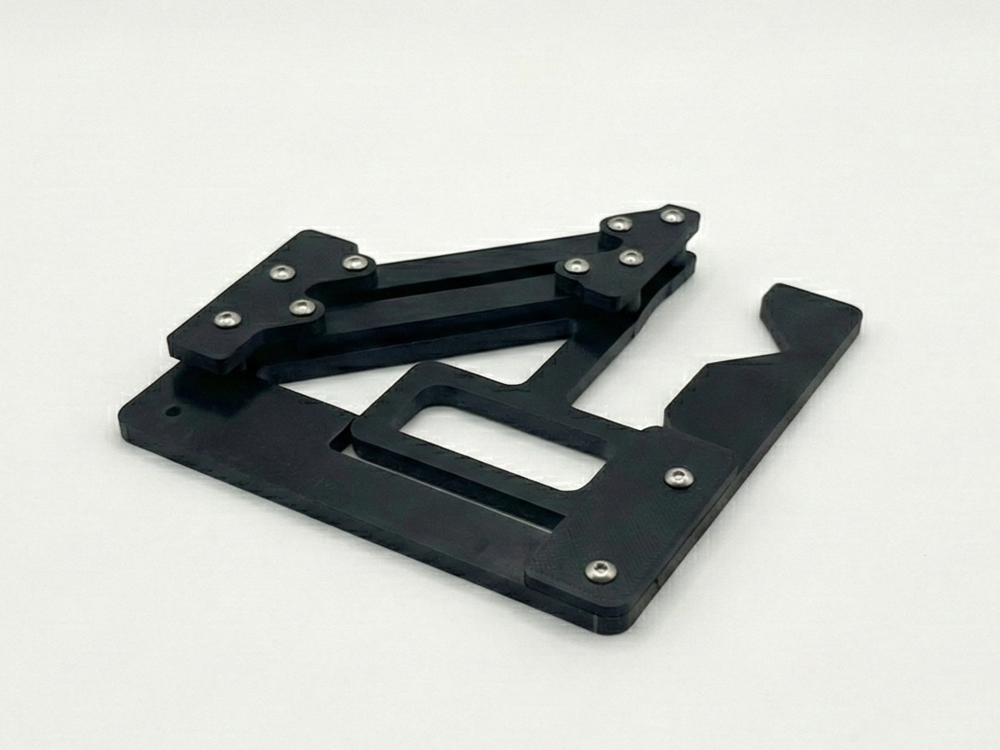
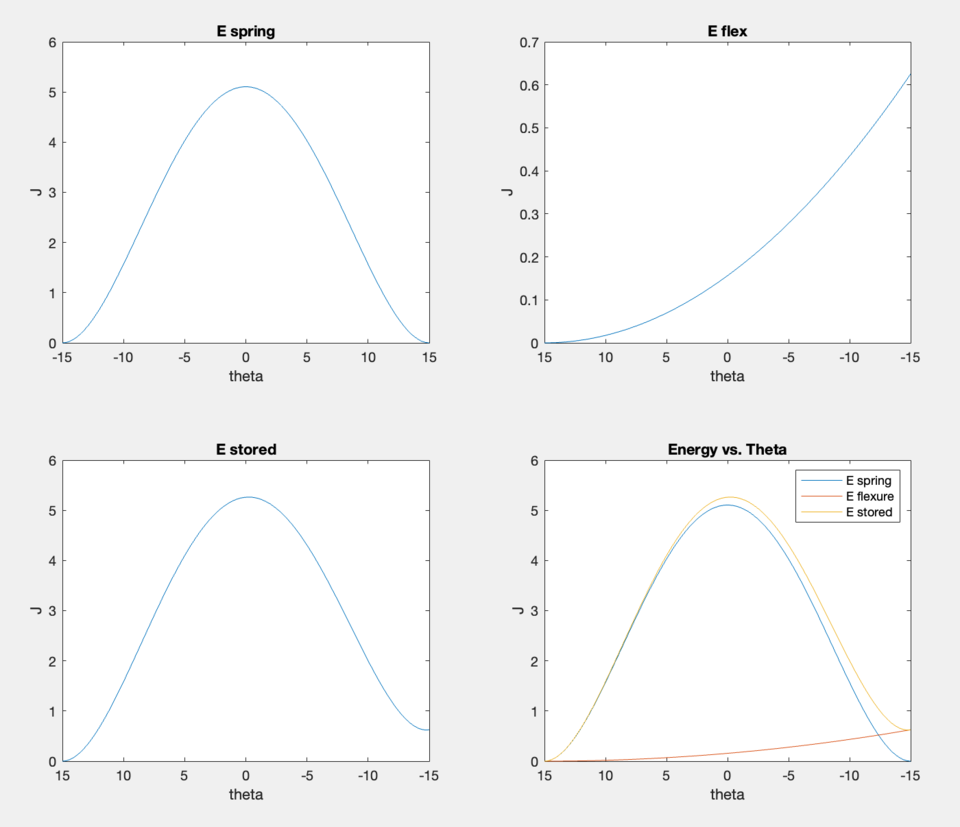

selected project
Egg Gripper
Gripper mechanism — A gentle gripping mechanism designed to interact with a fragile object without damaging it.

The Challenge
You are charged with building (i) a compliant gripper where all the motion is enabled by flexible joints and (ii) a rigid analog that has the same kinematic behavior. Design the compliant gripper to be actuated by hand. The gripper must grip an egg between two jaws and hold that egg while lifting the egg up and over Prof. Culpepper’s head (or someone else he designates). The gripper should not exert too much force (egg shell breaks) or too little force (egg falls on Culpepper’s head, you don’t want that). Your job is to make me understand that you understand how to use PRBM to create a useful mechanism. I am not looking for “cute” in circumventing rules (e.g., hard boiled eggs, baskets to hold egg, etc.…). You must design the rigid mechanism so that it can be attached on top of, and connected to, the compliant gripper. The links in each mechanism must track their analog in the other. Both mechanisms must move together so that it shows they emulate each others’ motion. They need not be connected during the “egg test”.
The Design
The Process

Reflection
3/5 mechanism designs. This was the first project we used FEA for and it was actually really helpful. One of the most interesting theories presented in this class in my opinion, but also hard to get used to for practical use.
← Return to My Projects